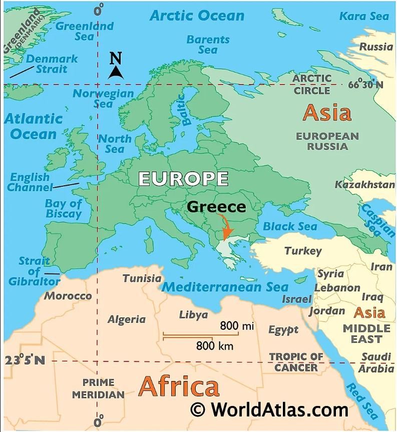

Overview
- Greece
- Trip Option
- Trip Itinerary
- Greece
- Trip Options
- Trip Itinerary
About-Greece
Greece officially the Hellenic Republic is a country in south East Europe. Greece has the longest coastline on the Mediterranean Basin, featuring thousands of islands. LearnMore
Athens
Athens, the capital of Greece, is one of the world's oldest cities spanning over 3000 years. It was a centre for the arts, learning and philosophy, and the home of Plato's Academy and Aristotle's Lyceum.

The final trip itinerary that we chose
| Date | Location | Remarks |
|---|---|---|
| 5th May | Athens | Arrive at Athens. Overnight stay. Chill out. |
| 6th May | Milos Islands | Take a ferry from Athens to Milos islands. |
| 7th - 10th May | Milos Islands | Kayaking, Sunset at Plaka castle, Boat ride to Kleftiko. |
| 10th - 13th May | Athens | Acropolis, Enjoy Greek food on Athens city walks. |